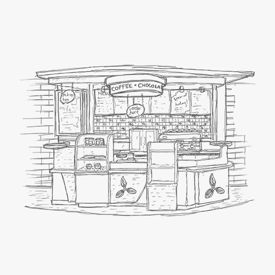
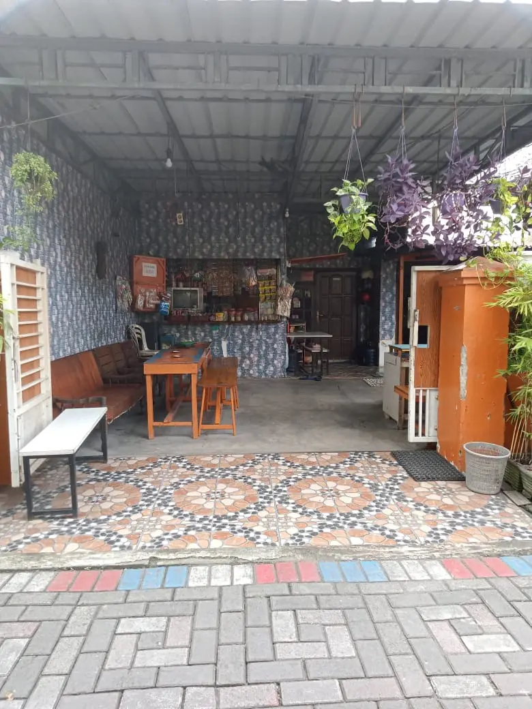
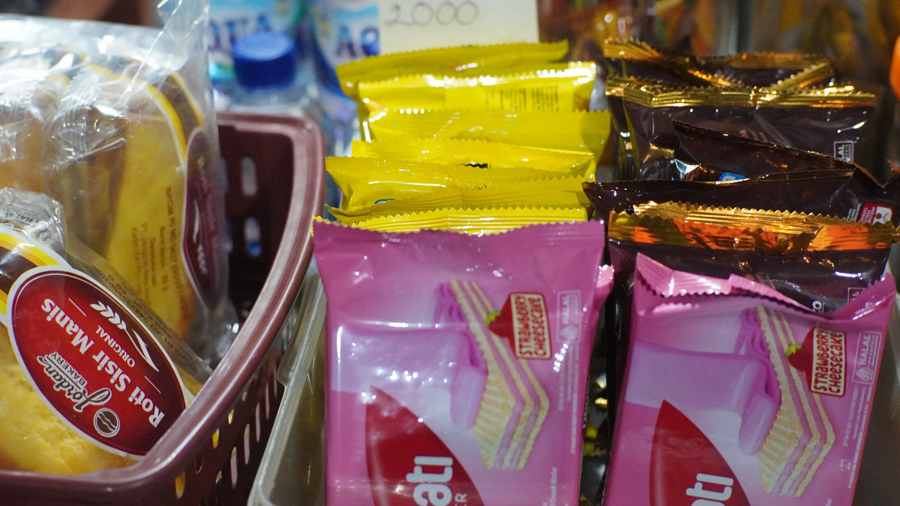
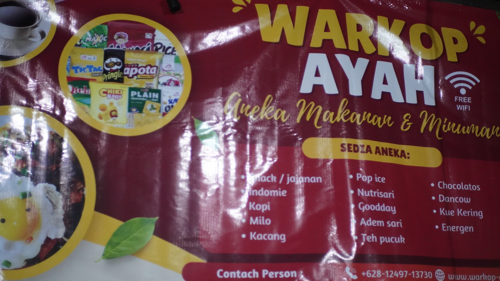
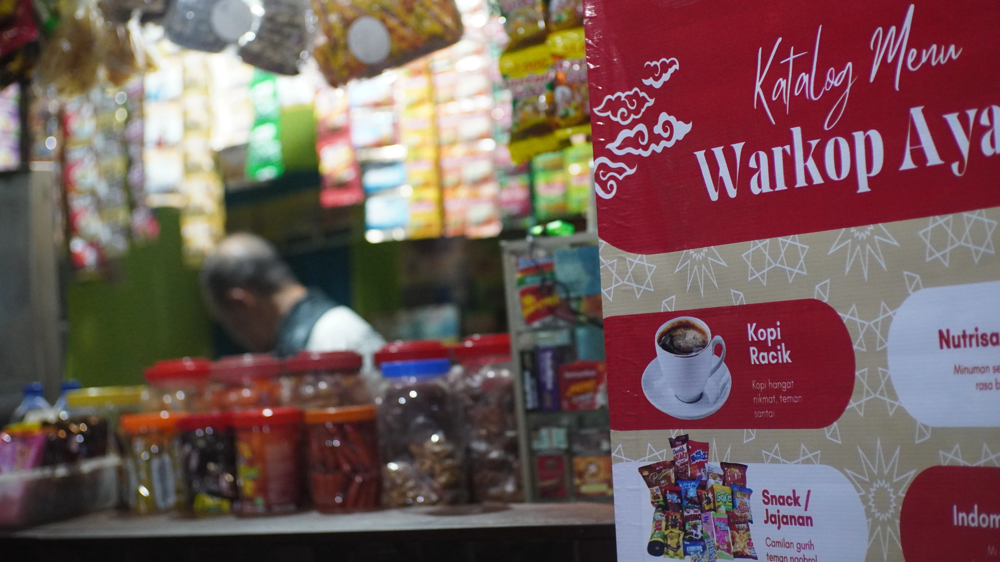
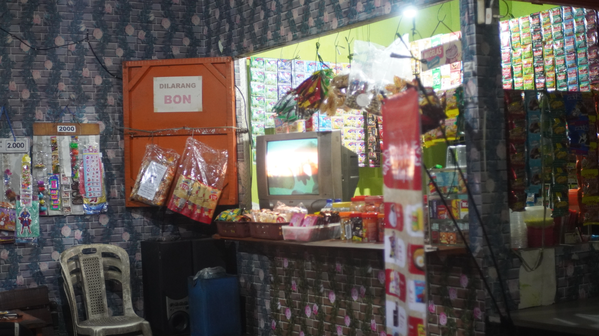
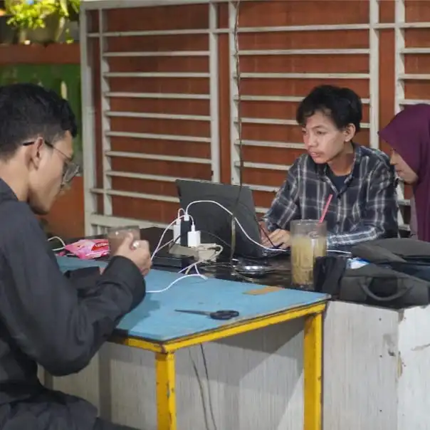
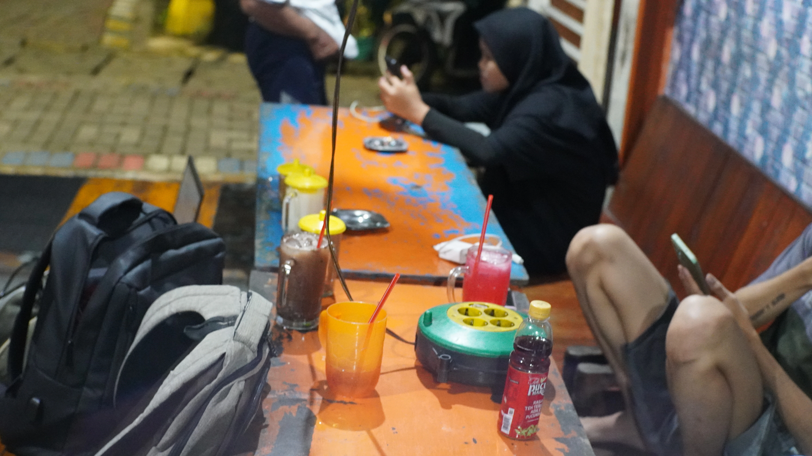
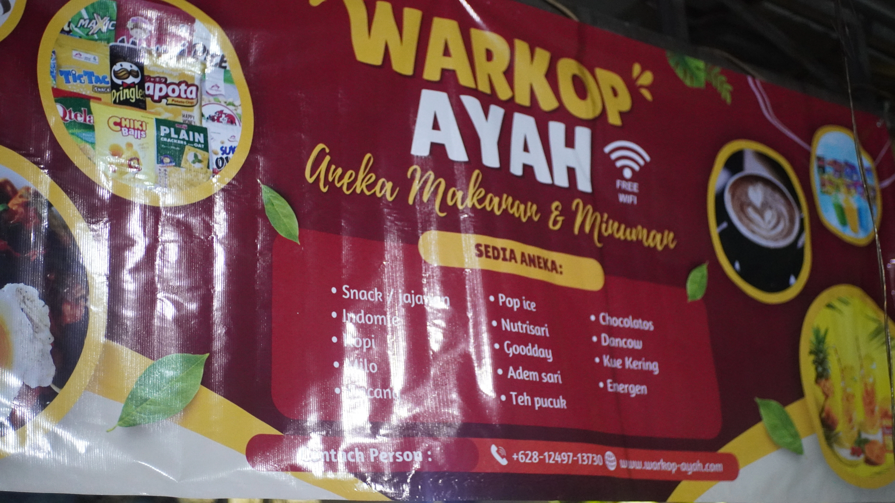
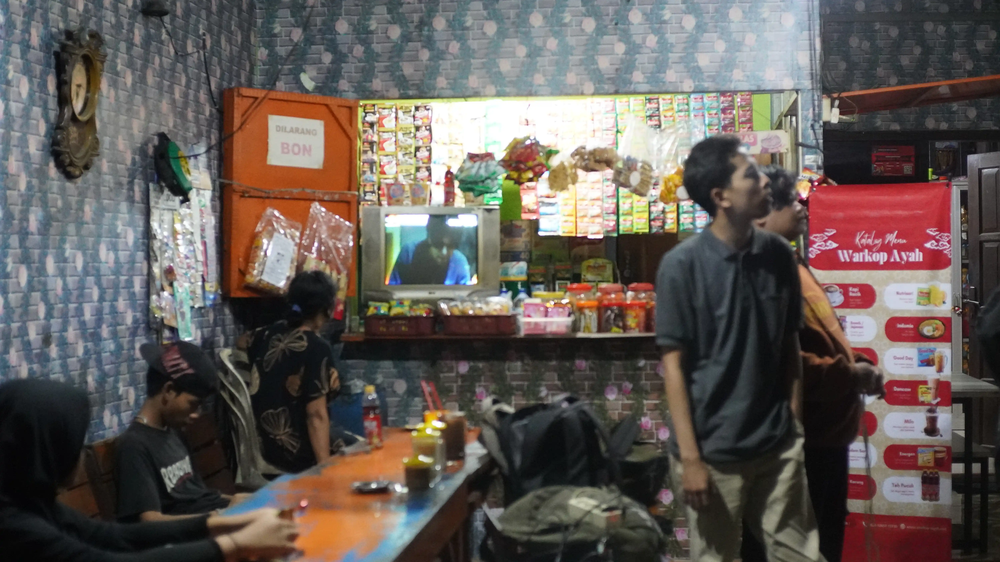

Dimulai dari teras rumah yang hangat sejak 2020, kami meracik minuman dan hidangan favorit untuk menemani setiap cerita dan melepas penat Anda.
Kopi hangat, minuman dingin menyegarkan, hingga mi & camilan teman nongkrong.
Dimulai dari satu meja sederhana di teras rumah yang hangat, kami tumbuh menjadi ruang bagi semua kalangan untuk berbagi tawa dan melepas penat setelah seharian bekerja.
Di tahun 2020, kami berkomitmen untuk menghadirkan pengalaman "ngopi" yang berbeda. Melalui kampanye "Kopi Jujur, Harga Sedulur", Warkop Ayah membuktikan bahwa kedai sederhana pun mampu menyajikan minuman berkualitas dengan standar rasa yang terjaga.
Dedikasi kami dalam meracik setiap gelas dengan sepenuh hati telah membawa Warkop Ayah menjadi tempat favorit warga sekitar. Kami bangga dapat terus menyajikan kehangatan melalui pilihan minuman terbaik yang diracik khusus untuk menemani setiap cerita Anda.

MOMENTS








